以 CNC 6063 铝为构想的
元素周期表交互设计稿。
Z = 1..118 元素矩阵、十八幅暗明双模视窗底版与五层程序化声学的静态图版及实时 WebGL2 交互原型。
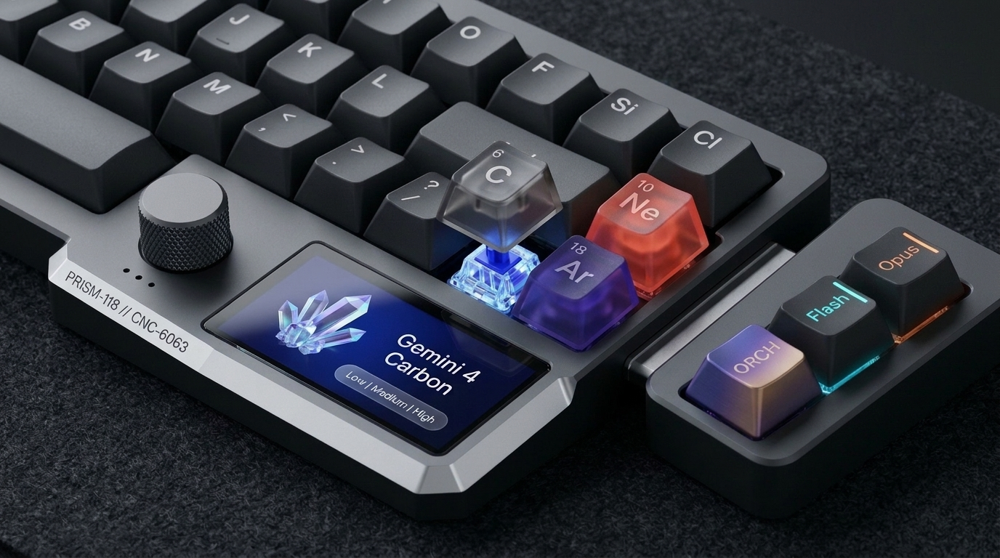
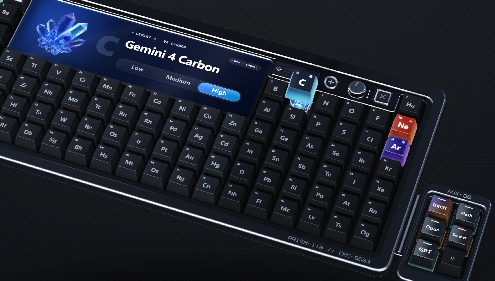
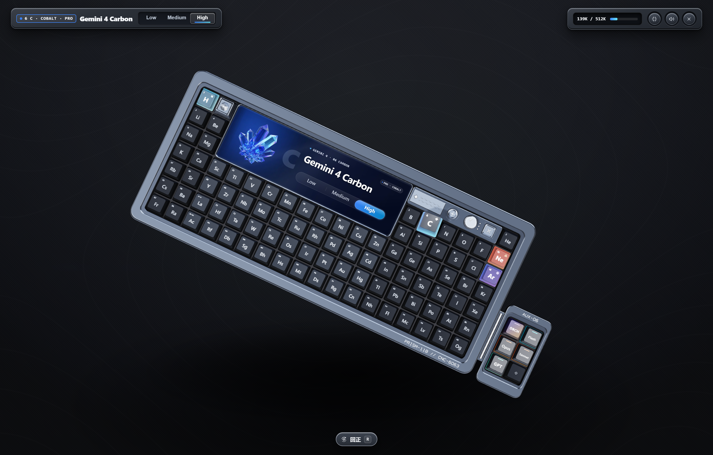
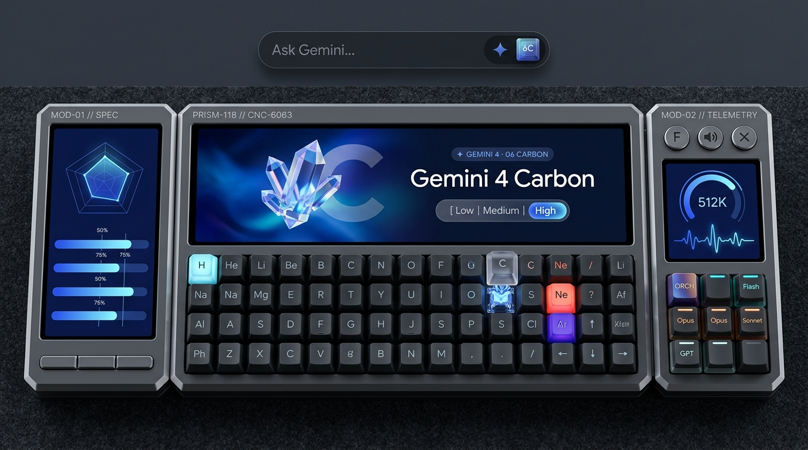
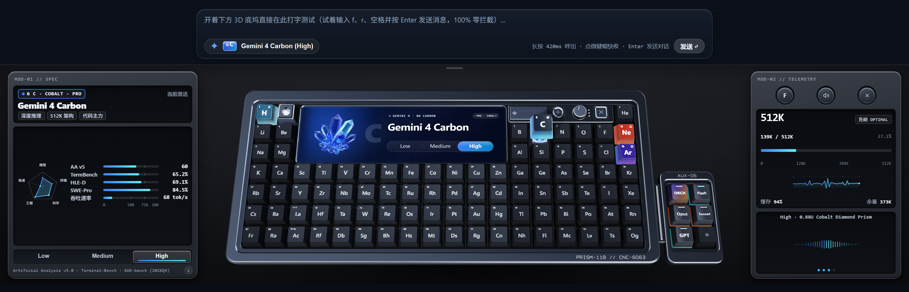
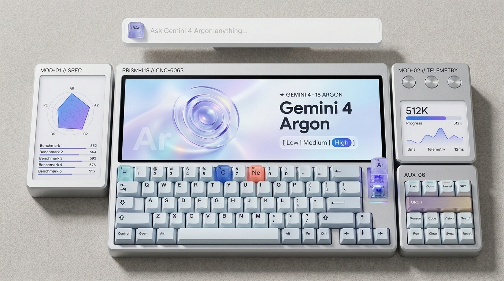
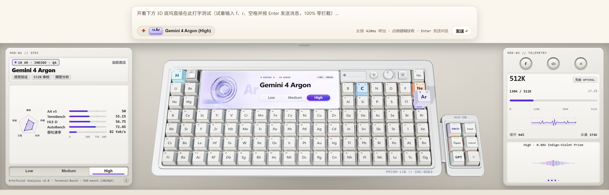
1H
Hydrogen · 晴空冰蓝
6C
Carbon · 皇家钴蓝
10Ne
Neon · 珊瑚流金
18Ar
Argon · 电光靛紫
#0
Orch · 星云紫金
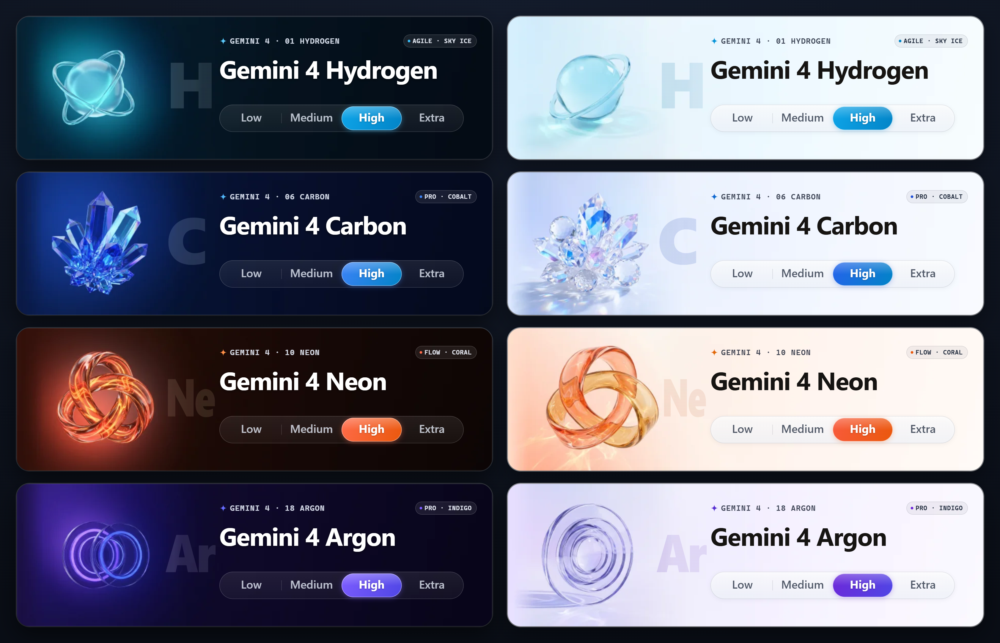
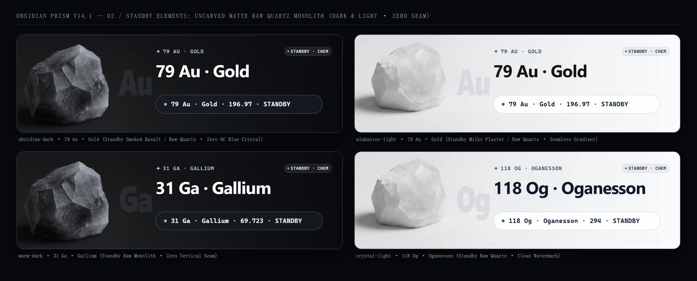
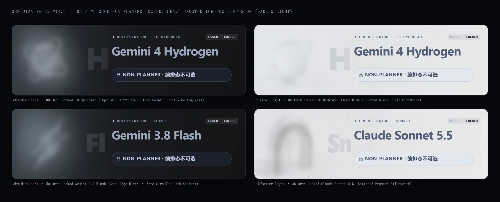
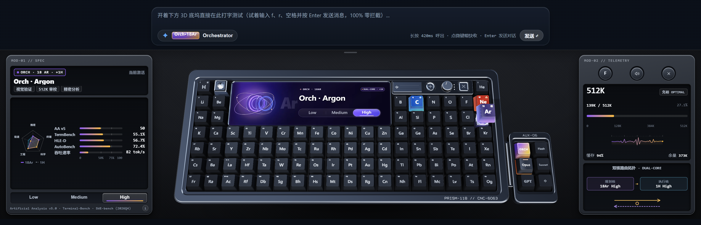
5 / 10 / 4
5 Programs · 10 Shaders · 4 VAOs · FrameGlobals UBO
1024 / 512px
5 Textures · 1 FBO · 64×32 RGB8 环境反射图
300Hz → 0.0
瞬态解锁 300Hz · 巡航/Eco 60fps · 静止即停机
120 ms
冷启动 0 解码 · 长按无感预热底版与颗粒
90 s
收起满 90s 自动释放底版、噪点池与字符图集
0 Reflow
Read-then-Write 展开 · rAF 合批与 16ms 矩形缓存
单实例 GPU · 实时同步就绪
在下方游标线敲击 f、r、空格并按 Enter 测试零拦截；点微铭牌或长按 420ms 唤出径向环。
轻点模型名弹出快速菜单，不中断当前输入语境。
轻点 [6C] 发丝微铭牌直接切换唯一 3D 控制台状态。
按住触发器 110ms 浮现径向环、120ms 静默预热、420ms 响应。